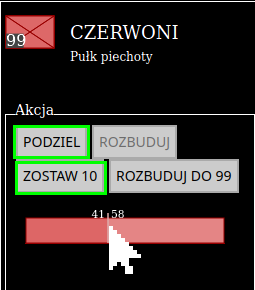
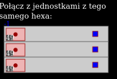
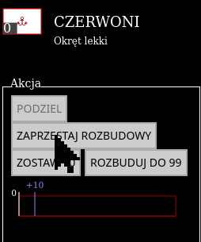
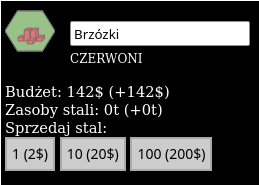
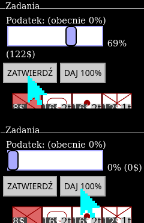
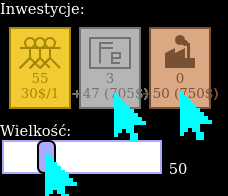
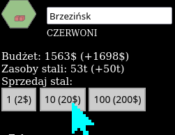
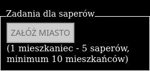
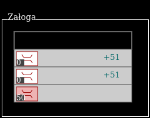
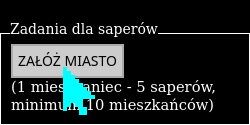

{pl|KAMPANIA|en|CAMPAIGN}
TUTORIAL
{pl|Generator rozgrywek|en|Game generator}
Menu

polski

English
Nowa gra
{pl|Ilość hexów na boku|en|Number of hexes on the side}: 15
{pl|Ilość lądu|en|Land amount}: 50%
{pl|Ilość gór na lądzie|en|Amount of mountains on land}: 10%
{pl|Ilość miast|en|Number of towns}: 24
{pl|Stawianie oddziałów|en|Unit placement}
{pl|Wybierz jednostkę do rozmieszczenia|en|Choose an unit to place}:
{pl|Wielkość oddziału|en|Size of an unit}:
50
{pl|Wszystkim po równo|en|Everyone has equal teams}
CZERWONI
Batalion piechoty
{pl|(1 mieszkaniec - 5 saperów, minimum 10 mieszkańców)|en|(1 inhabitant - 5 engineering troops, minimally 10 inhabitants)}
CZERWONI
Czerwoni
{pl|Podatek|en|Tax}: 23% (SunOfPeru approves)
{pl|Rozmiar|en|Size}: 50
{pl|Inwestycje|en|Investments}:
{pl|Wielkość|en|Amount}:
50
{pl|HISTORIA|en|HISTORY}
Tutorial
{pl|Cel|en|Goal}: {pl|Przenieś jednostki w docelowe miejsca (purpurowe kontury)|en|Move units to their destinations (purple contours)}
{pl|Wskazówki|en|Hints}:
1.

{pl|Aby zaznaczyć oddział, kliknij na niego. Należy kliknąć na prostokąt, który zakrywa obszar oddziału o wielkości 99.|en|To select an unit, click on it. You have to click a rectangle that covers an area of a unit of 99 size}
2.

{pl|Aby odznaczyć oddział, kliknij na dolną część sześciokąta, na którym jest oddział lub dowolny niepodświetlony sześciokąt, albo na obszar planszy bez sześciokątów.|en|To deselect a unit, click on the bottom part of a hexagon where the unit is placed or on an unhighlighted hexagon or on a board area without hexagons. }
3.

{pl|Po zaznaczeniu oddziału podświetlą się sześciokąty, na które możesz zaprowadzić drogę, którą poruszy się oddział.|en|After selecting of a unit, some hexagons will be highlighted and you can lead a path on them. The unit will move along this path after the end of the turn.}
{pl|W panelu sterowania pojawi się nowa strona, którą na razie można zignorować. |en|In the control panel a new page will appear, but now you can ignore it.}
4.

{pl|Po zaprowadzeniu drogi możesz ją przedłużyć w dowolnym kierunku.|en|After leading a path, you can prolong it in any direction.}
5.

{pl|Aby zakończyć prowadzenie drogi można|en|To end leading the path you can}:
-{pl|kilkąć 2-krotnie na miejsce docelowe|en|click twice on the destination place}
-{pl|kilkąć w dowolne niepodświetlone miejsce na planszy (niezależnie, czy to sześciokąt, czy jasnoszary obszar poza planszą)|en|click on any unhighlighted place on the board (it doesn't matter if it's a hexagon or the light-gray area on the edges)}
6.

{pl|Aby usunąć drogę, należy zaznaczyć oddział i kliknąć na obszar sześciokąta, na którym jest dany oddział, który nie jest przykryty przez oddział, gdyby miał wielkośc 99.|en|To remove a path, you have to select a hexagon area where the unit is placed, but not covered by a hipothetical unit of the max size.}
{pl|Intuicyjnie jego dolną część.|en|Intuitively the bottom part of the hexagon.}
7.
{pl|Aby zakończyć turę i ruszyć oddziały, należy odznaczyć oddział i kliknąć na przycisk|en|To end a turn and let the units move, you have to deselect a unit and click an} "{pl|ZAKOŃCZ TURĘ|en|END TURN}"{pl|.|en| button.}
{pl|Oddziały lekkie mogą podczas jednej tury poruszać się po lądzie o liczbę pól odpowiednią do swojej szybkości, a przy wchodzeniu na górę o 1 pole.|en|During one turn, light units can move through the number of hexagons equal or lesser than its speed and when climbing a mountain, only through 1 hexagon.}
{pl|Oddziały górskie mogą podczas jednej tury poruszać się zarówno po lądzie i po górach o liczbę pól odpowiednią do swojej szybkości (jedynie 2).|en|During one turn, mountain units can move through number of hexagons equal or lesser than its speed on both land and mountains}
{pl|Oddziały|en|Units}:
{pl|Piechota|en|Infantry}

| {pl|Szybkość|en|Speed} | 2 |
| {pl|Rodzaj|en|Type} | {pl|lekki|en|light} |
{pl|Piechota zmotoryzowana|en|Motorized infantry}

| {pl|Szybkość|en|Speed} | 5 |
| {pl|Rodzaj|en|Type} | {pl|lekki|en|light} |
Piechota górska

| {pl|Szybkość|en|Speed} | 2 |
| {pl|Rodzaj|en|Type} | {pl|górski|en|mountain} |
{pl|Cel|en|Goal}: {pl|Przenieś jednostki w docelowe miejsca (purpurowe kontury)|en|Move units to their destinations (purple contours)}
{pl|Wskazówki|en|Hints}:
1.

{pl|Na stosie na sześciokącie (8,4) są 4 oddziały: 3 oddziały czołgów i 1 oddział piechoty na samym spodzie.|en|On a stack on (8,4) hexagon there are 4 units: 3 tank units and one infantry unit on the bottom of the stack.}
{pl|Zaznacz oddział na wierzchu stosu, klikając na niego. Tasuj oddziały, klikając ponownie na nie, aż oddział piechoty będzie na wierzchu.|en|Choose an unit on the top of the stack by clicking on it. Shuffle units by clicking again on them until the infantry unit will be on the top.}
{pl|W panelu sterowania można zobaczyć kolejność oddziałów na stosie pod zaznaczonym oddziałem.|en|In the control panel you can see the order of units on the stack which are below of the selected unit.}

2.

{pl|Wejdź oddziałem piechoty na górę na północno-zachodni (lub południowo-zachodni) sześciokąt.|en|Move the infantry unit to the mountain on the north-western (or south-western) hexagon}
{pl|Zakończ turę|en|End turn}.
3.
{pl|Podziel ów oddział piechoty|en|Divide this infantry unit}.
{pl|Można to zrobić na 2 sposoby|en|You can do this in 2 ways}:
-{pl|zaznacz oddział piechoty i kliknij na niego jeszcze raz. Wtedy z oddziału wydzielony zostanie oddział o wielkości 10 i przeniesiony na spód stosu.|en|select an infantry unit and click on it one more time. A smaller unit of size 10 will be carved out of the unit and moved to the bottom of the stack.}
{pl|UWAGA!|en|NOTICE!} {pl|Działa to jedynie na oddziałach, które są jedyne na ich sześciokącie.|en|It works only for units which are alone on their hexagon.}

-{pl|po zaznaczeniu oddziału, w panelu sterowania widoczny jest panel dzielenia/rozbudowy oddziału.|en|after selecting an unit, there is a division/building section in the control panel.}
{pl|na pasku, w tym panelu można zaznaczyć liczebność oddziałów, które powstaną ze starego oddziału po podzieleniu. Aby podzielić oddział w dokładny sposób, należy klinkąć przycisk "PODZIEL"|en|on a bar in this section you can set the size of units which will be crated from the old unit after dividing them. To divide a unit in a precise way you have to click "DIVIDE" button}
-{pl|alternatywnie, można klinkąc przycisk "ZOSTAW 10", przez co z oddziału wydzielony zostanie oddział o liczebności 10|en|alternatively, you can click "LEAVE 10" and an unit of size 10 will be created}
{pl|UWAGA!!!|en|NOTICE!!!}
{pl|Dzielenie oddziałów nie działa, gdy na sześciokącie, gdzie znajduje się dany oddział są 4 oddziały (maksymalna liczba).|en|Dividing units doesn't work if on a hexagon there are 4 units (maximum number)}
4.

{pl|Poprowadź podzielone oddziały na docelowe miejsca. Pamiętaj, że oddziały na jednym sześciokącie można "tasować".|en|Move the divided units on their destination places}
{pl|Zakończ turę|en|End turn}.
5.

{pl|Na sześciokącie (8,1) znajduje się stos oddziałów czołgów. Powinien przejść na pole (10,3), ale jest blokowany przez 3 stosy oddziałów artylerii, ponieważ na jednym sześciokącie nie może być więcej, niż 4 oddziały.|en|On (8,1) hexagon there is a stack of tank units. It should move to (10,3) field, but it's being blocked by 3 stacks of artillery units because on one hexagon there can be no more than 4 units.}

{pl|Aby połączyć oddziały, należy zaznaczyć oddział na szczycie stosu i z panelu sterowania wybrać oddział z tego samego stosu, z którym zaznaczony oddział ma zostać połączony. Oddziały na stosie, które mogą być połączone z zaznaczonym oddziałem mają niebieski kwadrat po prawej stronie.|en|In order to merge units, you have to select a unit on the top of the stack and select an unit from the same stack in the control panel, with which the unit will be merged}
{pl|UWAGA!!!|en|NOTICE!!!} {pl|Można łączyć jedynie oddziały tego samego rodzaju.|en|You can merge only units of the same type.}
{pl|Po "udrożnieniu" drogi oddział czołgów może przejechać w docelowe miejsce.|en|After clearing the path, the tank unit can finally go to the destination.}
6.
{pl|Oddziały można łączyć też w inny sposób. Dotyczy to oddziałów tego samego typu, ale na różnych heksach, oddalonych od siebie o zasięg oddziału plus jeden.|en|Units can be merged also in a different way. It applies for units of the same type, but on different hexagons far from themselves up to their speed plus 1.}
{pl|Należy zaznaczyć jeden oddział obrony przeciwlotniczej. Ponieważ oddział ten znajduje się obok drugiego oddziału obrony przeciwlotniczej, ten drugi oddział będzie miał kontury podświetlone na niebiesko. Oznacza to, że można na niego kliknąć, by zaplanować akcję połączenia.|en|You need to select one of anti-aircraft units. Because this unit is placed next to another anti-aircraft unit, the second unit will have its contours marked in blue. It means that you can click on it to plan merging both units.}


{pl|Jeśli oddział nie stoi zaraz obok drugiego oddziału, należy poprowadzić drogę zaraz pod oddział i wtedy będzie można zaplanować połączenie oddziałów.|en|If a unit isn't placed next to another unit, you need to lead a path to the hexagon directly bordering this unit and then it will be possible to plan merging units.}
{pl|UWAGA|en|NOTICE}! {pl|Jeśli suma wielkości łączonych oddziałów będzie większa, niż 99, wtedy część oddziału nie zostanie połączona i zostanie na swoim miejscu, a drugi oddział będzie miał wielkośc 99. |en|If a sum of sizes of merged units will be greater than 99, then part of one unit will not be merged and will stay on its place and the second unit will have size of 99.}

{pl|Po zaplanowaniu łączenia oddziałów, można zakończyć turę.|en|After planning merging units you can end turn.}
{pl|Są to oddziały ciężkie, więc nie mogą poruszać się po górach oraz nie mogą samodzielnie poruszać się po wodzie.|en|These are heavy units, so they cannot move through the mountains and cannot move through water on their own.} {pl|Oddziały ciężkie tak, jak lekkie mogą podczas jednej tury poruszać się jedynie po lądzie o liczbę pól odpowiednią do swojej szybkości.|en|During one turn, heavy units can move through the number of hexagons equal or lesser than its speed, just like light units}
{pl|Oddziały|en|Units}:
{pl|Czołgi|en|Tanks}

| {pl|Szybkość|en|Speed} | 3 |
| {pl|Rodzaj|en|Type} | {pl|ciężki|en|heavy} |
{pl|Artyleria|en|Artillery}

| {pl|Szybkość|en|Speed} | 1 |
| {pl|Rodzaj|en|Type} | {pl|ciężki|en|heavy} |
{pl|Obrona przeciwlotnicza|en|Anti-aircraft}

| {pl|Szybkość|en|Speed} | 1 |
| {pl|Rodzaj|en|Type} | {pl|ciężki|en|heavy} |
{pl|Cel|en|Goal}: {pl|Przenieś jednostki w docelowe miejsca (purpurowe kontury)|en|Move units to their destinations (purple contours)}
{pl|Wskazówki|en|Hints}:
1.
{pl|Oddział piechoty na sześciokącie (3,9) musi dotrzeć na sześciokąt (1,0), który jest na wyspie, a jak wiadomo oddział lądowy nie może samodzielnie przejść na wyspę.|en|An infantry unit on (3,9) hexagon have to go to the (1,0) hexagon, which is on island and ground units cannot move through water on its own.}
{pl|Można jednak poprowadzić ścieżkę przez wodę.|en|Anyway, you can still lead unit's path through water.}

2.
{pl|Jednak aby oddział lądowy można było przenieść, należy doprowadzić oddział łodzi desantowych do pierwszego wodnego sześciokąta, który jest na wyznaczonej drodze (miejsce załadunku oddziału).|en|But in order to move ground unit through water, you need to move a landing craft unit to the first water hexagon which is on a leaded way (place of embarking).}

{pl|Można teraz zakończyć turę.|en|You can end turn now.}
{pl|UWAGA|en|NOTICE}!!! {pl|Kolejność prowadzenia dróg oddziałów będzie miała wpływ na kolejność ruchów podczas fazy przemieszczania się. Oddziały zaznaczone później wykonają ruch później. Dlatego warto najpierw zaplanować drogę tratwy, a potem dopiero drogę desantowanego oddziału.|en|The order of leading paths of the units will correspond to the order in which these units are moved after the end of the turn. So it's better to plan the path of the landing craft first and then plan the path of the unit which will be embarked.}
3.
 {pl|Ponieważ wielkość oddziału łodzi desantowych jest mniejsza, niż oddział desantowany, oddział ten będzie podzielony i jedynie część niego będzie transportowana.|en|Because the size of the landing craft unit is smaller than the unit which will be embarked, the unit will be divided and only part of it will be transported.}
{pl|Ponieważ wielkość oddziału łodzi desantowych jest mniejsza, niż oddział desantowany, oddział ten będzie podzielony i jedynie część niego będzie transportowana.|en|Because the size of the landing craft unit is smaller than the unit which will be embarked, the unit will be divided and only part of it will be transported.}
{pl|Aby przenieść cały oddział na miejsce docelowe, oddział łodzi desantowych będzie musiał wrócić po wyładowaniu piechoty.|en|In order to move a whole unit through the sea, the landing craft will have to come back to move the rest of the embarked unit after the first part of it has landed on the island. }

4.

{pl|Poruszanie się oddziałów wodnych po wodzie jest trywialne. Nie mogą one poruszać się po niezamieszkałym lądzie.|en|Moving naval units through water is trivial. They cannot move through an uninhabited land.}
{pl|Są to oddziały wodne, więc nie mogą poruszać się po niezamieszkałym lądzie lub górach.|en|They are naval units, so they cannot move through an uninhabited land.}
{pl|Oddział łodzi desantowych nie może atakować i służy do transportowania wszystkich oddziałów lądowych przez morze.|en|Landing craft units cannot attack and they are used only to transport all ground units through the water.}
{pl|Oddziały|en|Unit}:
{pl|Lekkie okręty|en|Light warships}

| {pl|Szybkość|en|Speed} | 3 |
| {pl|Rodzaj|en|Type} | {pl|wodny|en|naval} |
{pl|Pancerniki|en|Battleships}

| {pl|Szybkość|en|Speed} | 3 |
| {pl|Rodzaj|en|Type} | {pl|wodny|en|naval} |
{pl|Łodzie desantowe|en|Landing crafts}

| {pl|Szybkość|en|Speed} | 3 |
| {pl|Rodzaj|en|Type} | {pl|wodny/transportowy|en|naval/transport} |
{pl|Cel|en|Goal}: {pl|Zajmij wszystkie miasta|en|Capture all cities}
{pl|Wskazówki|en|Hints}:
1.
{pl|Zajmij jedno miasto. Przesuń jedyny twój oddział na którekolwiek z miast.|en|Take one town. Move your only unit to any town.}
{pl|Zakończ turę.|en|End turn.}

{pl|Aby efektywnie zająć miasto potrzeba oddział o wielkości 10 dowolnego nie-lotniczego rodzaju. Jeśli suma oddziałów na sześciokącie będzie mniejsza, niż 10, wtedy miasto zbierze mniej pieniędzy na turę.|en|In order to take a town effectively you need to capture is with a non-aircraft unit of size at least 10.}
2.

{pl|Aby zaznaczyć zdobyte miasto, należy kliknąć na dolną część sześciokąta z miastem. Miasto będzie zaznaczone po kliknięciu, jeśli to sześciokąt z miastem będzie podświetlony, a nie oddział na nim.|en|In order to select a captured town, you need to click the lower part of a hexagon with a town. The town will be selected after clicking it if the hexagon and not unit is highlighted.}
3.
{pl|Po kliknięciu wyświetli się panel sterowania miastem.|en|After clicking, the control panel for the town will appear.}
{pl|Najważniejszym zadaniem jest wybudowanie nowego oddziału.|en|The most important task is to build a new unit.}

{pl|W panelu sterowania jest tablica możliwych do wybudowania oddziałów. W danej grze nie można wybudować wyszarzonych oddziałów. Suwakiem "Rozmiar" można zmienić wielkość oddziału. Aby zaplanować budowę oddziału należy kliknąć na odpowiedni oddział na tablicy.|en|In the control panel there is a pane with possible unit types to build. In one play you cannot build units marked as gray. You can change the size of planned units with "Size" slider. In order to plan unit building you need to click on a proper unit type on the pane.}

{pl|Po zaplanowaniu, na sześciokącie pojawią się puste oddziały z jasnoniebieską obwódką. Znajduje się tam także liczba, o ile docelowo oddział ma urosnąć.|en|After that, on the hexagon empty units with cyan border will appear. There will also be a number how much this unit will still have to grow.}
4.

{pl|Aby usunąc planowanie, należy zaznaczyć ten oddział i w panelu sterowania kliknąć przycisk "ZAPRZESTAJ ROZBUDOWY".|en|In order to cancel planning building, you have to select this unit and click "STOP BUILDING".}
5.
{pl|Zakończ turę. Dalsze zajmowanie miast przez ląd powinno być proste.|en|End turn. Capturing more cities through land should be easy.}
6.

{pl|Oddziały morskie mogą też stacjonować w miastach. Oczywiście doprowadza to do takiego kuriozum, że statki mogą poruszać się ciągiem miast w głąb lądu, ale to nie błąd, tylko funkcjonalność.|en|Naval units can also station in towns. Obviously it leads to a weird situation where a naval unit can move through a chain of towns deeply inside a land, but it isn't a bug, it's a feature.}
7.

{pl|Jeśli w mieście przy wodzie jest zarówno oddział lądowy i łodzie desantowe, można poprowadzić oddział przez wodę bez stawiania łodzi desantowych na morzu. Oddział łodzi desantowych nie może być jednak wtedy rozbudowywany.|en|If on a town next to the water there are both a land unit and landing crafts, you can lead the path through the water without putting landing crafts on the sea. The landing craft units cannot be in process of building in order to make embarking happen.}
{pl|Gdy kończy się tura drużyny, wtedy oddziały są rozbudowywane za pomocą pieniędzy zgromadzonych w danym mieście.|en|When a turn of a team ends, then the units are built up with money which are gathered in a town.}
{pl|Najpierw rozbudowywane są oddziały najwyżej na stosie. Jesli któryś oddział będzie rozbudowany do końca, wtedy rozbudowywany jest kolejny oddział niżej na stosie.|en|At first the units on the top of the stack are built up first. If an unit will be built completely, then the next unit lower on the stack will be built up.}
{pl|W panelu sterowania miasta przy produkcji widoczne są ceny oddziałów. Jest to cena za rozbudowę danego oddziału o wielkość 1, np. oddział piechoty o wielkości 99 kosztuje 792$.|en|In the control panel of a town, in the unit production section there are costs of each of the units. It is the cost for adding 1 to its size. For example an infantry unit of 99 size costs 792$.}
{pl|Liczbę pieniędzy dla danego miasta dostępną w danej turze można zobaczyć w górnej części panelu sterowania.|en|You can see the amount of money in a town in the top part of the control panel for the town.}

{pl|W tej lekcji mowa jest głównie o tworzeniu oddziałów, nie wymagających stali/produkcji.|en|In this lesson only building units which do not need steel/production is discussed.}
{pl|Poniżej pokazane są ceny tych oddziałów (nie licząc wojsk saperskich).|en|Below, there are costs of each type of these units (besides engineering troops).}
{pl|Oddziały|en|Units}:
{pl|Piechota|en|Infantry}
| {pl|Cena|en|Cost} | 8$ |
{pl|Piechota górska|en|Mountain infantry}
| {pl|Cena|en|Cost} | 10$ |
{pl|Lekkie okręty|en|Light warships}
| {pl|Cena|en|Cost} | 12$ |
{pl|Łodzie desantowe|en|Landing crafts}
| {pl|Cena|en|Cost} | 4$ |
{pl|Cel|en|Goal}: {pl|Przenieś jednostki w docelowe miejsca (purpurowe kontury)|en|Move units to their destinations (purple contours)} i zniszcz wszystkie oddziały nieprzyjaciela
{pl|Wskazówki|en|Hints}:
1.
W tej lekcji pojawiły się oddziały przeciwnika. Jedyną akcją, który on robi jest zakończenie tury, więc można na nim testować bez obawy, że straci się oddziały.
2.
Oddziały przeciwnika można zaatakować na 2 sposoby:

-można dla oddziału poprowadzić drogę na/przez sześciokąt, na którym stoi oddział nieprzyjaciela. Twój oddział przejdzie na ten sześciokąt dopiero jeśli wygra walkę.

-można dla oddziału poprowadzić drogę na odległość zasięgu ataku oddziału (przydatne zwłaszcza dla oddziałów, które mają daleki zasięg ataku). Wtedy podobnie, jak przy łączeniu oddziałów, kontury oddziału przeciwnika zmienią kolor, tym razem na czerwony. Oznacza to, że można zaplanować atak na nie bez ruszania się na sześciokąt, na którym znajduje się oddział nieprzyjaciela.
3.

Dla oddziałów morskich zasady są generalnie takie same. Więcej o atakach za pomocą oddziałów morskich w lekcji "desant".
4.

Atakowanie oddziałów z góry przez oddziały lekkie daje przewagę terenu, przez co siła ataku oddziału jest większa. Odwrotnie, w przypadku ataku na oddział stojący na górze siła ataku jest mniejsza.
Oddziały górskie oprócz szybszego poruszania się po górach mają jeszcze bardziej zwiększoną siłę ataku z góry i siłę obrony na górze. Ponadto inne oddziały, które je atakują z góry nie mają przewagi terenu.
5.

Oddziały, które mają zasięg ataku większy od 1 mogą oczywiście strzelać na oddziały będące na morzu i za morzem. Dla oddziałów ciężkich ograniczeniem jest to, że nie mogą atakować w ten sposób oddziałów, znajdujących się na górach.
Po walce na sześciokącie oddziały obrońcy i (nie zawsze) atakującego zmniejszają swoje rozmiary.
Algorytm walki brzmi następująco:
-ustalana jest wartość ataku dla atakującego (siła ataku jednostki atakującej razy współczynnik terenu dla atakującego) i obrony dla broniącego (siła obrony jednostki broniącej razy współczynnik terenu dla broniącego)
-wartość ataku jest mnożona przez losową wartość z zakresu od 0 do 2, a obrony przez losową wartość z zakresu od 0 do 1
-jeśli wartość ataku jest większa od wartości obrony, liczba oddziału bronionego jest dzielona przez podłogę różnicy wartości ataku i obrony
-broniący oddział odpowiada tym samym, z tym że, wartość ataku dla broniącego jest mnożona przez współczynnik obrony, a wartość obrony dla atakującego przez współczynnik ataku
-algorytm jest powtarzany tyle razy ile wynosi wielkość oddziału atakującego
Oddział łodzi desantowych nie może atakować i służy do transportowania wszystkich oddziałów lądowych przez morze.
Siły obrony dla omawianych oddziałów:
Piechota
| Siła ataku | 1 |
| Siła obrony | 1 |
| Zasięg ataku | 1 |
| Rodzaj | lekki |
Czołgi
| Siła ataku | 2 |
| Siła obrony | 2 |
| Zasięg ataku | 1 |
| Rodzaj | ciężki |
Artyleria
| Siła ataku | 1.6 |
| Siła obrony | 0 |
| Zasięg ataku | 3 |
| Rodzaj | ciężki |
Piechota zmotoryzowana
| Siła ataku | 1 |
| Siła obrony | 1 |
| Zasięg ataku | 1 |
| Rodzaj | lekki |
Piechota górska
| Siła ataku | 1 |
| Siła obrony | 1 |
| Zasięg ataku | 1 |
| Rodzaj | górski |
Lekkie okręty
| Siła ataku | 1 |
| Siła obrony | 1 |
| Zasięg ataku | 2 |
| Rodzaj | morski |
Pancerniki
| Siła ataku | 2 |
| Siła obrony | 2 |
| Zasięg ataku | 2 |
| Rodzaj | morski |
{pl|Cel|en|Goal}: {pl|Zajmij wszystkie miasta|en|Capture all cities}
{pl|Wskazówki|en|Hints}:
1.
Zaatakuj nadbrzeżne miasta nieprzyjaciela za pomocą okrętów.

WAŻNA UWAGA! Oddziały atakujące, które mają większy zasięg, niż oddziały atakowane nie otrzymują obrażeń w walce na dystans. Dlatego oddziały morskie doskonale nadają się do przygotowania desantu oddziałów lądowych na ląd zamorski.
2.
UWAGA! Nie powinno się atakować sześciokątów z oddziałami nieprzyjaciela za pomocą oddziałów desantowanych. Oddziały broniące mają wtedy podwójną wartość obrony.

3.
Nierozważnym jest też atakowanie oddziałów morskich zadokowanych w miastach, ponieważ działa ten sam mechanizm podwojonej wartości obrony, jak podczas desantu oddziałami lądowymi.

Dlatego lepszym rozwiązaniem jest atakowanie owych oddziałów morskich za pomocą piechoty, od strony lądu.


Gdy kończy się tura drużyny, wtedy oddziały są rozbudowywane za pomocą pieniędzy zgromadzonych w danym mieście.
Najpierw rozbudowywane są oddziały najwyżej na stosie, jesli któryś oddział będzie rozbudowany do końca, wtedy rozbudowywany jest kolejny oddział niżej na stosie.
W panelu sterowania miasta przy produkcji widoczne są ceny oddziałów. Jest to cena za rozbudowę danego oddziału o wielkość 1, np. oddział piechoty o wielkości 99 kosztuje 792$.
Liczbę pieniędzy dla danego miasta dostępną w danej turze można zobaczyć w górnej części panelu sterowania.
W tej lekcji mowa jest głównie o tworzeniu oddziałów, nie wymagających stali/produkcji.
Poniżej pokazane są ceny tych oddziałów (nie licząc wojsk saperskich).
Oddziały:
Piechota
| Cena | 8$ |
Piechota górska
| Cena | 10$ |
Lekkie okręty
| Cena | 12$ |
Łodzie desantowe
| Cena | 4$ |
{pl|Cel|en|Goal}: Zniszcz wszystkie oddziały nieprzyjaciela
{pl|Wskazówki|en|Hints}:
1.
Masz do swojej dyspozycji 14 miast o łącznej populacji 1698, co daje łącznie 1698$ na turę.
Mimo to, nie można od razu tych pieniędzy wykorzystać w jednym miejscu.
Potrzebne jest wysyłanie podatków do jednego, wybranego miasta.
Po zaznaczeniu dowolnego miasta w panelu sterowania widać suwak i przyciski odpowiadające za podatki:

Przesuń suwakiem o dowolną ilość i naciśnij przycisk "ZATWIERDŹ" lub naciśnij przycisk "DAJ 100%".

Rozpoczyna się prowadzenie drogi, którą mogą będą wysyłane podatki. Drogę prowadzi się podobnie, jak drogę oddziałów.
 Główna różnica polega na tym, że drogę można poprowadzić tylko do innego miasta, kontrolowanego przez tą samą drużynę. Jeśli klinie się na niepodświetlony sześciokąt, bądź na oddział, prowadzenie drogi zakończy się niepowodzeniem.
Główna różnica polega na tym, że drogę można poprowadzić tylko do innego miasta, kontrolowanego przez tą samą drużynę. Jeśli klinie się na niepodświetlony sześciokąt, bądź na oddział, prowadzenie drogi zakończy się niepowodzeniem.
Spróbuj poprowadzić podatek do jednego miasta, najlepiej blisko cieśniny, za którą jest przeciwnik.

2.
W panelu sterowania dla zaznaczonego miasta widać, że można zbudować jedynie 6 rodzajów oddziałów w tym tutorialu.
W dodatku w żadnym mieście nie można zbudować 4 z 6 oddziałów. Są to oddziały, do których produkcji potrzeba oprócz pieniędzy także stali i przemysłu.

Aby zwiększyć produkcję stali i przemysł, w dolnej części panelu, w sekcji "Inwestycje" ustaw suwak na wybraną wielkość i klinkij szary i brązowy prostokąt, by zaplanować kolejno produkcję stali i przemysł.
Zakończ turę.
3.

Widać, że w koło miasta pojawiły się prostopadłościany, które oznaczają produkcję stali i przemysł.

Odblokowane zostały też 4 pozostałe oddziały. Obok ceny w pieniądzach widoczna jest też cena zwiększenia oddziału o 1 w tonach stali. W przeciwieństwie do oddziałów lekkich, które można kupować za pomocą dowolnej ilości pieniędzy, do zwiększenia oddziału potrzeba tyle samo ogólnej wielkości przemysłu, co ton stali. Np. gdy miasto ma 200 ton stali, ale tylko 50 przemysłu, może ono użyć tylko 50 ton stali.

Poza tym nie można przesyłać stali w podatkach. Można jednak sprzedawać stal, klikając na przeciski w górnej części panelu sterowania miasta. Za 1 tonę stali można dostać 2$.
4.
Wybuduj oddziały artylerii (zalecane) lub obrony przeciwlotniczej, bo tylko one mogą dosięgnąć oddziałów przeciwnika na tej mapie. Dalsza część lekcji jest trywialna. Możesz też zwiększyć populację miasta, by jeszcze szybciej budować oddziały.
Uwagi odnośnie prowadzenia podatków
Przenoszenie pieniędzy drogą kosztuje.
Cena przesyłu przez sześciokąt zależy od rodzaju terenu: 2$ dla lądu/miasta, 5$ dla morza, 8$ dla gór.
Dlatego czasami nie można doprowadzić drogi z miasta o małej populacji do któregoś z odległych miast.
Poniżej pokazane są ceny nowych oddziałów (nie licząc wojsk saperskich).
Oddziały:
Czołgi
| Cena | 16$ |
| Wymagana ilość stali/przemysłu | 2$ |
Artyleria
| Cena | 16$ |
| Wymagana ilość stali/przemysłu | 2$ |
Piechota zmotoryzowana
| Cena | 12$ |
| Wymagana ilość stali/przemysłu | 1$ |
Obrona przeciwlotnicza
| Cena | 16$ |
| Wymagana ilość stali/przemysłu | 1$ |
{pl|Cel|en|Goal}: {pl|Przenieś jednostki w docelowe miejsca (purpurowe kontury)|en|Move units to their destinations (purple contours)}
{pl|Wskazówki|en|Hints}:
1.
Trzeba poprowadzić oddział piechoty z sześciokąta (9,8) na pole (3,2). Jednak na lądzie, na którym oddział ten się znajduje nie ma żadnego miasta, a na mapie nie ma żadnego oddziału łodzi desantowych.
Jest jednak na sześciokącie (8,8) oddział saperów.
 Saperzy mogą budować mosty, jeśli się dla nich zaplanuje drogę przez wodę.
Saperzy mogą budować mosty, jeśli się dla nich zaplanuje drogę przez wodę.
Po zaplanowaniu trasy przejdź kilka tur, aż oddział saperów przejdzie morze.
1.5.
UWAGA
 Oddział saperski, budując most, buduje most jedynie o szerokości wielkości tego oddziału. Na moście o takiej szerokości suma wielkości oddziałów nie może przekraczać szerokości tego mostu.
Oddział saperski, budując most, buduje most jedynie o szerokości wielkości tego oddziału. Na moście o takiej szerokości suma wielkości oddziałów nie może przekraczać szerokości tego mostu.

Aby wybudować szerszy most, trzeba poprowadzić większy oddział.
2.
Po utworzeniu mostu można już przejść nim oddziałami lądowymi.

3.
Oczywiście oddział o wielkości 99 jest za duży na most o szerokości 50.
 Resztki oddziału należy poprowadzić jeszcze raz w to samo miejsce.
Resztki oddziału należy poprowadzić jeszcze raz w to samo miejsce.

Teraz można połączyć oddział piechoty i poprowadzić go na miejsce.
4.
Oprócz budowania mostów, część oddziału saperów może się "poświęcić", by zbudować miasto na sześciokącie lądowym.
Jeśli zaznaczy się oddział saperów, będący na sześciokącie lądowym (bez miasta), wtedy w panelu sterowania widoczny jest przycisk "ZAŁÓŹ MIASTO":

Jak widać, przycisk ten jest zablokowany. To dlatego, że jedynie oddziały o wielkości od 51 mogą zakładać miasta.
Poprowadź oddział na jedyne miasto na planszy i zbuduj 2 oddziały, z których oba mają wielkość większą, niż 50:

Pomiń 10 tur.
5. Oddział okrętów lekkich z sześciokątu (9,3) ma za zadanie dostać się na sześciokąt (0,2), ale nie może się tam dostać, bo drogę zagradza ląd.
Istnieje pewien myk (wcale nie bug), by oddział mógł tam się dostać. Należy zbudować 2 miasta przez ląd w najkrótszym miejscu.

Poprowadź 2 nowe oddziały saperów w to miejsce i pomiń tury aż oddziały dotrą na miejsce.
6.
Klinkij na któryś z oddziałów.

Potem załóż miasto, klikając przycisk w panelu sterowania.
7.
 Teraz można bez przeszkód przeprowadzić statki przez ląd.
Teraz można bez przeszkód przeprowadzić statki przez ląd.
8.
Ostatnia uwaga

Mosty także można niszczyć. Atakuje się je tak samo, jak oddziały wroga. Można je atakować, gdy po najechaniu będą podświetlone. Nie można atakować mostu, na którym jest inny twój oddział.
- Po założeniu miasta zostaje jedynie oddział o wielkości 5 albo reszta z dzielenia przez 5 wielkości tego oddziału. Reszta oddziału zamienia się w populację, gdzie na każde 5 wielkości oddziału przypada 1 mieszkaniec miasta.
- W wypadku, gdy oddział saperski wejdzie w morze, ale w tym miejscu będzie oddział łodzi desantowych, nie wybuduje on mostu, ale popłynie łodziami.
Oddziały:
Wojska saperskie

| Cena | 12$ |
{pl|Cel|en|Goal}: {pl|Przenieś jednostki w docelowe miejsca (purpurowe kontury)|en|Move units to their destinations (purple contours)} i zniszcz wszystkie oddziały nieprzyjaciela
{pl|Wskazówki|en|Hints}:
1.
W tej lekcji omawiane są oddziały lotnicze. Mogą one przemieszczać się na dowolne sześciokąty na planszy. Nie mogą jednak sprawnie zajmować miast.

Najpierw spróbuj zaatakować oddziały nieprzyjaciela oddziałem lotnictwa bojowego.
2.

Po ataku bezpośrednim ataku, oddziały lotnicze także nie ponoszą strat dla większości oddziałów lądowych i morskich.

2.5.
Wyjątkiem są oddziały obrony przeciwlotniczej. Mają one 3-krotnie większą siłę ataku i obrony w walce z lotnictwem. NIE ATAKUJ ICH LOTNICTWEM, chyba że oddziały te są bardzo małe.
3.
Drugim oddziałem lotniczym jest oddział lotnictwa transportowego. Oddziały lekkie mogą używać tych oddziałów do podróży lotniczej.
 Przenieś oddział lotnictwa transportowego blisko oddziału piechoty.
Przenieś oddział lotnictwa transportowego blisko oddziału piechoty.
4.

Następnie zaznacz oddział piechoty. Jeśli oddział lotnictwa transportowego znajduje się na sąsiadującym sześciokącie, podświetli się on na pomarańczowo.
Aby zaplanować transport powietrzny, kliknij podświetlony oddział.
4.5.

Inną metodą na załadowanie oddziału jest przeniesienie go tam, gdzie jest oddział lotnictwa transportowego, zaznaczenie oddziału, który chce się transportować i kliknięcie w panelu sterowania na oddział lotnictwa transportowego (jeśli pojawi się tam pomarańczowy kwadrat).
5.

Oddział transportowany można na wyładować od razu, zaznaczając go i klikając na prostokąt, na którym on się znajduje.
6.
Jeśli oddział został wyładowany, załaduj go ponownie.

Można też zaplanować równoczesne przesłanie i rozładowanie transportowanego oddziału:
-zaplanuj drogę
-kliknij sześciokąt na końcu drogi, pojawi się zielony krzyżyk oznaczający rozładowanie
-zaplanuj dalszą drogę oddziału
Pomiń tury aż oddział zdobędzie miasto.
7.

Po zdobyciu miasta zaplanuj budowę oddziału lotnictwa transportowego i oddziału piechoty, oba o wielkości 99.
Pomiń tury, aż oddziały zostaną wybudowane.

Następnie przetransportuj oddział do miejsca docelowego.
8.
Jak już wcześniej było powiedziane, oddziały obrony przeciwlotniczej mają potrójną wartość ataku i obrony przeciwko oddziałom lotniczym.

Aby to zobrazować, zaatakuj oddziałem obrony przeciwlotniczej z sześciokąta (1,12) pobliski oddział lotnictwa bojowego nieprzyjaciela.

Mimo, że oddział jest 2 razy mniejszy, może on całkowicie unieszkodliwić oddział nieprzyjaciela.
Jednak oddziały obrony przeciwlotniczej nie mają takiego bonusu przeciwko zwykłym oddziałom lądowym, bądź morskim.

Dlatego nawet oddział piechoty może unieszkodliwić oddział obrony przeciwlotniczej bez problemu.
Oddziały lotnicze mogą w jakimś sensie zajmować miasta, ale mogą efektywnie zbierać zysku z miasta.

Wtedy do budżetu miasta wpada jedynie 1$ na turę.
Inną sprawą jest to, że oddziały lotnicze stacjonujące w miastach mogą być celem ataku na odległość.

Oddziały:
Lotnictwo bojowe

| Cena | 20$ |
| Wymagana ilość stali/przemysłu | 2$ |
| Siła ataku | 1 |
| Siła obrony | 0 |
| Zasięg ataku | 3 |
| Rodzaj | lotniczy |
Lotnictwo transportowe

| Cena | 12$ |
| Wymagana ilość stali/przemysłu | 1$ |
| Siła ataku | - |
| Siła obrony | 0 |
| Zasięg ataku | - |
| Rodzaj | lotniczy/transportowy |